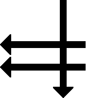
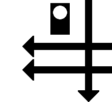

02 Beschreibung Mit der Mundpfeife oder dem Horn: Zwei lange Töne und ein kurzer Ton. und mit dem Arm: Tageszeichen: Zweimal eine waagerechte Bewegung des Armes vom Körper nach außen und eine schnelle senkrechte Bewegung nach unten. Nachtzeichen: Zweimal eine waagerechte Bewegung der Laterne vom Körper nach außen und eine schnelle senkrechte Bewegung nach unten.  